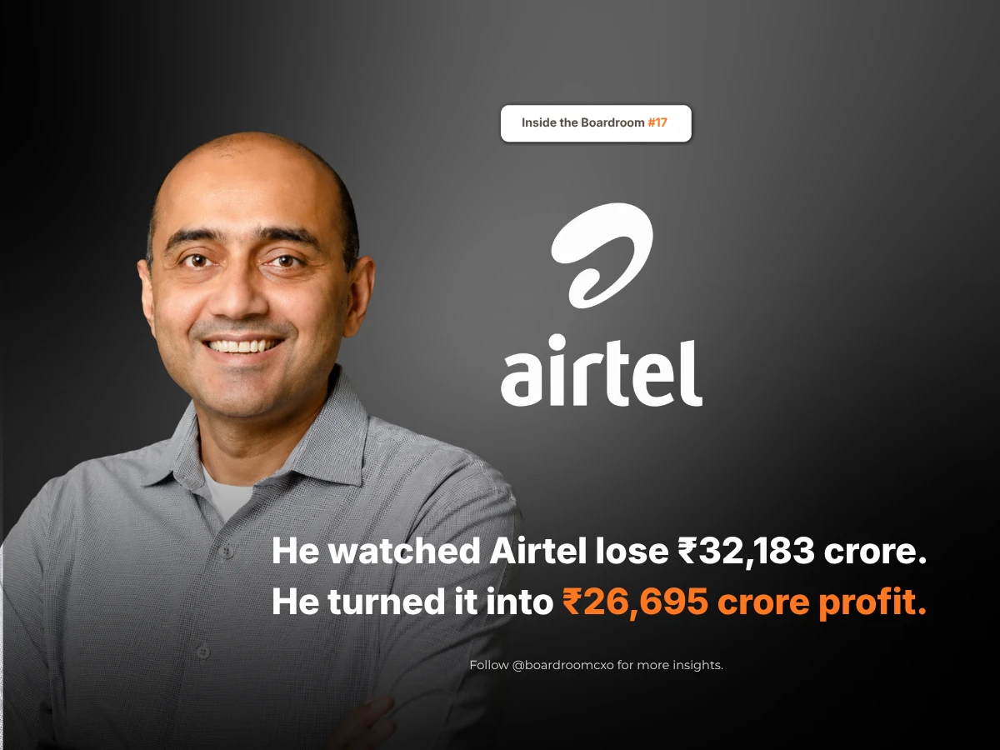

In September 2016, a new operator walked into Indian telecom and gave away mobile data for free. Not cheap. Free.
Within twelve months, Bharti Airtel's quarterly profit fell 76.5%, from ₹1,461 crore to ₹343 crore, and revenue dropped 11.7%. By September 2018, its revenue per user had sunk to about ₹100. Rivals merged or shut down. Then a Supreme Court ruling on old licence dues landed on top of the price war, and Airtel posted a net loss of ₹32,183 crore for the year to March 2020.
Who Is Gopal Vittal?
Gopal Vittal was running Airtel's India business through all of it. In October 2017, he said out loud what everyone else was avoiding, that the stress would force operators to consolidate and exit. He was right, and he was describing his own market from the inside.
The Decision Most Operators Would Not Make
In a price war, the obvious move is to chase every subscriber you can hold. He did not. He let the cheapest customers go instead. Airtel shed around 40 million low-spending users and put the money into the network, which meant losing subscriber numbers while every headline counted them.
He kept investing through the losses, adding towers and mobile broadband stations quarter after quarter. He built the business around people who would pay more for something better, not around people who would leave for a rupee.
By the December 2025 quarter, Airtel's revenue per user was ₹259, against ₹213.7 at Jio and ₹186 at Vodafone Idea. Its India operating margin reached 60.4%, with 368.5 million mobile customers. FY26 closed with ₹2.1 lakh crore in revenue and ₹26,695 crore in net profit. The company that refused to chase the cheapest customer now earns about 21% more per user than the company that started the war.
The Boardroom Lesson Most Turnaround Stories Miss
Most coverage of this period frames it as survival: Airtel weathered the price war and came out the other side. What gets skipped is that Vittal made an active choice inside the crash, not a passive one. Losing 40 million subscribers on purpose, while the market narrative was entirely about who could hold the most subscribers, took a specific kind of conviction that the number the market was watching was the wrong number.
Winning a price war and surviving one are different jobs. The second is usually done by whoever refuses to fight.
A leader chasing quarterly headlines protects subscriber count. A leader chasing the business protects the metric that actually pays for the network. Those two instincts point in opposite directions during a price war, and Vittal picked the harder one to defend publicly.
Common Mistakes Boards Make During a Price War
Boards overseeing a company through an industry-wide price war tend to make the same three errors.
They measure the wrong number during the crisis. Subscriber count is visible every quarter and easy to defend to the market. Revenue per user is the number that actually determines whether the business survives the war, and it often moves in the opposite direction from subscriber count in the short term.
They cut investment when the results look worst. Vittal kept adding towers and broadband stations through the losses. Boards under pressure often do the reverse, pulling back capital expenditure exactly when a competitor is least able to match continued investment.
They punish a leader for saying the hard thing publicly. Vittal's October 2017 statement that the industry would have to consolidate was, in effect, a forecast of his own company's near-term pain. Boards should value that kind of candor rather than pressuring leadership toward more comfortable public messaging.
A Framework for Evaluating This Kind of Leader
When we brief boards on a CXO search involving a candidate who led a business through a margin-destroying price war, we push for three specific checks.
- Ask which metric they protected, and why. A candidate who defends a decision to lose customers on purpose, and can explain the specific economics behind it, has a different level of judgment than one who simply weathered a downturn.
- Look at what they kept funding while results were worst. The investment made during the losses, not the recovery, is usually the actual decision that determined the outcome years later.
- Test their comfort naming the problem publicly before it resolves. A leader willing to describe the industry's stress accurately in real time, rather than waiting for the recovery to speak, is signaling a level of conviction worth probing further.
Why This Belongs in the Boardroom, Not Just the Business Pages
This is the same capital-discipline pattern we examined in Anish Shah's turnaround at Mahindra, where the harder, less visible decision, what to keep funding rather than what to cut, was the one that actually produced the recovery. Vittal's version played out over years of a public price war rather than a targeted portfolio exit, but the underlying discipline was the same: protect the metric that matters, not the one the market is watching that quarter.
The market does not reward the operator who defends the most subscribers. It rewards boards that can tell the difference between a leader managing the headline number and one managing the business underneath it.
Frequently Asked Questions
Who is Gopal Vittal?
Gopal Vittal has run Bharti Airtel's India business since 2013, leading it through the price war that followed a new operator's entry into Indian telecom in September 2016 and the subsequent industry-wide financial stress, including a ₹32,183 crore net loss for Airtel in the year to March 2020 following a Supreme Court ruling on licence dues.
Why did Bharti Airtel's profits collapse in 2016 and 2017?
In September 2016, a new operator entered Indian telecom offering free mobile data. Within twelve months, Airtel's quarterly profit fell 76.5%, from ₹1,461 crore to ₹343 crore, and revenue dropped 11.7%. By September 2018, its revenue per user had sunk to about ₹100, and several rivals subsequently merged or shut down.
What did Gopal Vittal do differently during the telecom price war?
Instead of chasing every subscriber to hold market share, Gopal Vittal let Airtel shed around 40 million low-spending users, losing subscriber-count headlines in the process, and redirected the freed capital into the network, adding towers and mobile broadband stations quarter after quarter even through years of losses.
How is Airtel performing under Gopal Vittal today?
By the December 2025 quarter, Airtel's revenue per user reached ₹259, against ₹213.7 at Jio and ₹186 at Vodafone Idea. Its India operating margin reached 60.4% with 368.5 million mobile customers, and FY26 closed with ₹2.1 lakh crore in revenue and ₹26,695 crore in net profit.
What is Gopal Vittal's approach to capital allocation?
Gopal Vittal treats core telecom as the first call on Airtel's capital. In his own words: "If you're not doing well there, you have no right to do anything else," reflecting a discipline of funding the core network business before any adjacent bet.
Related Reading
Anish Shah: The Outsider Who Fixed Mahindra's ₹5,200 Crore Problem
Read → R · 02 Founder Leadership · July 2026Sanjiv Mehta: The HUL Leader Who Never Forgot Bhopal
Read → R · 03 Founder Leadership · July 2026Suresh Narayanan: The MD Who Walked Into the Maggi Ban
Read →Need a leader who protects the metric that matters, not the one the market is watching?
We screen for candidates who can defend an unpopular decision with real numbers, not just weather a downturn and wait for the recovery. Brief us on your next CXO mandate and we will tell you what the market actually has to offer.
Brief Us on a Mandate See all Marketing leadership roles we fill →